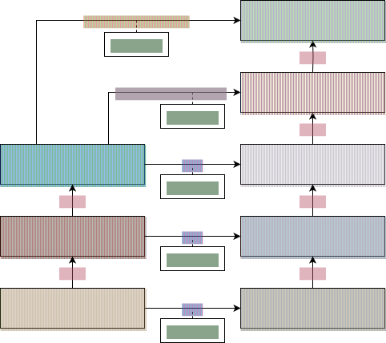

Keeping State in Extensions
Usually, an extension is instantiated only once. So the question becomes relevant: How do
you keep the state from one invocation of an extension to the next? The
ExtensionContext API provides a Store exactly for this purpose.
Extensions may put values into a store for later retrieval.
See the TimingExtension for an
example of using the Store with a method-level scope.
|

ExtensionContext and Store hierarchyAs illustrated by the diagram above, stores are hierarchical in nature. When looking up a
value, if no value is stored in the current ExtensionContext for the supplied key, the
stores of the context’s ancestors will be queried for a value with the same key in the
Namespace used to create this store. The root ExtensionContext represents the engine
level so its Store may be used to store or cache values that are used by multiple test
classes or extension. The StoreScope enum allows to go beyond even
that and access the stores on the level of the current ExecutionRequest or
LauncherSession which can be used to share data across test engines or inject data
from a registered
LauncherSessionListener,
respectively. Please consult the Javadoc of ExtensionContext,
Store, and StoreScope for details.
|
Resource management via
An extension context store is bound to its extension context lifecycle. When an
extension context lifecycle ends it closes its associated store. As of JUnit 5.13,
all stored values that are instances of AutoCloseableAutoCloseable are notified by an invocation of
their close() method in the inverse order they were added in (unless the
junit.jupiter.extensions.store.close.autocloseable.enabled
configuration parameter is set to false). Older
versions only supported CloseableResource, which is deprecated but still available for
backward compatibility.
|
An example implementation of AutoCloseable is shown below, using an HttpServer
resource.
HttpServer resource implementing AutoCloseableclass HttpServerResource implements AutoCloseable {
private final HttpServer httpServer;
HttpServerResource(int port) throws IOException {
InetAddress loopbackAddress = InetAddress.getLoopbackAddress();
this.httpServer = HttpServer.create(new InetSocketAddress(loopbackAddress, port), 0);
}
HttpServer getHttpServer() {
return httpServer;
}
void start() {
// Example handler
httpServer.createContext("/example", exchange -> {
String body = "This is a test";
exchange.sendResponseHeaders(200, body.length());
try (OutputStream os = exchange.getResponseBody()) {
os.write(body.getBytes(UTF_8));
}
});
httpServer.setExecutor(null);
httpServer.start();
}
@Override
public void close() {
httpServer.stop(0);
}
}This resource can then be stored in the desired ExtensionContext. It may be stored at
class or method level, if desired, but this may add unnecessary overhead for this type of
resource. For this example it might be prudent to store it at root level and instantiate
it lazily to ensure it’s only created once per test run and reused across different test
classes and methods.
Store.getOrComputeIfAbsentpublic class HttpServerExtension implements ParameterResolver {
@Override
public boolean supportsParameter(ParameterContext parameterContext, ExtensionContext extensionContext) {
return HttpServer.class.equals(parameterContext.getParameter().getType());
}
@Override
public Object resolveParameter(ParameterContext parameterContext, ExtensionContext extensionContext) {
ExtensionContext rootContext = extensionContext.getRoot();
ExtensionContext.Store store = rootContext.getStore(Namespace.GLOBAL);
String key = HttpServerResource.class.getName();
HttpServerResource resource = store.getOrComputeIfAbsent(key, __ -> {
try {
HttpServerResource serverResource = new HttpServerResource(0);
serverResource.start();
return serverResource;
}
catch (IOException e) {
throw new UncheckedIOException("Failed to create HttpServerResource", e);
}
}, HttpServerResource.class);
return resource.getHttpServer();
}
}HttpServerExtension@ExtendWith(HttpServerExtension.class)
public class HttpServerDemo {
@Test
void httpCall(HttpServer server) throws Exception {
String hostName = server.getAddress().getHostName();
int port = server.getAddress().getPort();
String rawUrl = String.format("http://%s:%d/example", hostName, port);
URL requestUrl = URI.create(rawUrl).toURL();
String responseBody = sendRequest(requestUrl);
assertEquals("This is a test", responseBody);
}
private static String sendRequest(URL url) throws IOException {
HttpURLConnection connection = (HttpURLConnection) url.openConnection();
int contentLength = connection.getContentLength();
try (InputStream response = url.openStream()) {
byte[] content = new byte[contentLength];
assertEquals(contentLength, response.read(content));
return new String(content, UTF_8);
}
}
}|
Migration Note for Resource Cleanup
Starting with JUnit Jupiter 5.13, the framework automatically closes resources stored in
the If you’re developing an extension that needs to support both JUnit Jupiter 5.13+ and earlier versions and your extension stores resources that need to be cleaned up, you should implement both interfaces: This ensures that your resource will be properly closed regardless of which JUnit Jupiter version is being used. |